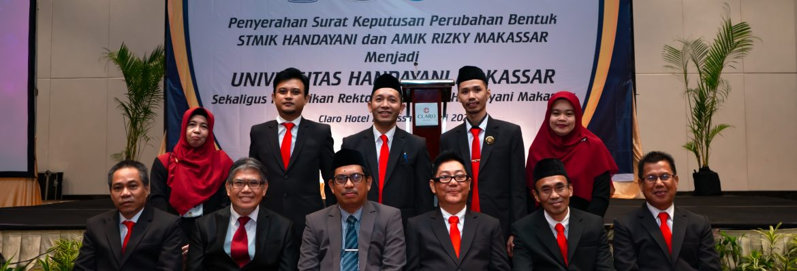

Foto dan Video Kampus, Kegiatan, dan Fasilitas



Tentang Universitas Handayani Makassar
Universitas Handayani Makassar adalah Lembaga Pendidikan Tinggi di Kopertis Wil. IX yang didirikan pada tahun 1996. Sejak tahun 2013 menyelenggarakan program Magister Komputer (M.Kom) yang pertama di Indonesia Timur.
Kontak Kami
Jl. Adhyaksa Baru No. 1, Telp. (0411) 4673395 Makassar - Sulawesi Selatan Indonesia
Email : info@handayani.ac.id